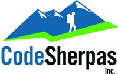

Hello world!
Rails Girls comes to Pittsburgh! During the free two-day workshop we'll dive into the magical world of Ruby on Rails.
You learn designing, prototyping and coding with the help from our coaches.
You need your own laptop, curiosity and a sprinkle of imagination!
Want to help? We are looking for volunteers and Rails coaches.
Email us.
| 6:00pm - 8:00pm |
Installation partyGet know the attendees a little bit before hand. Bring your laptop if you can, so we can install Ruby on Rails with you.Where: AlphaLab 2325 East Carson Street Pittsburgh, PA 15203 |
|---|---|
| 8:30pm - 11:00pm |
Coaches' dinnerA dinner for the coaches of Rails Girls, where we'll go through the program for the next day, and have some talks and discussions about coaching. It is important to attend! |
| 9:00am - 10:00am |
Registration, coffee and installation festDuring the morning we’ll install Ruby on Rails on your computer if you didn't make it to the install party. |
|---|---|
| 10:00am - 10:15am |
WelcomeOutline of the day & word from sponsors. |
| 10:20am - 10:45am |
Tryruby.orgLet's get coding! |
| 10:50am - 11:10am |
Designing your web app |
| 11:10am - 12:00pm |
WorkshopJumpstart your first web application |
| 12:00pm - 1:00pm |
LunchYou may continue working on your application, if you like, or get to know some of the other participants. |
| 1:00pm - 1:30pm |
Bentobox - Understanding Web AppsRecap of what we’ve learned and how it all fits together. |
| 1:30pm - 2:30pm |
Lighting talks from coaches |
| 2:30pm - 6:00pm |
WorkshopExtend your application. |
| 7:00pm - |
AfterpartyOpen for everyone, meet cool people interested in tech. |
Applications close: December 21st
Acceptances informed: January 4th
Location:
AlphaLab
2325 East Carson Street
Pittsburgh, PA 15203
Rails Girls Pittsburgh is co-organized with our awesome partners.
Want to help? We're looking for partners & sponsors for the non-profit event! Email us!
Retailer of indie designer fashion and decor, ModCloth.com is growing at light speed thanks to its innovative technology, great vision, and awesome group of employees. Using Ruby on Rails and agile practices, the ModCloth Team is crushing the competition as they pursue their mission of disrupting the world of social commerce!
geeknest Building software that makes the world a better place for clients and ourselves.
AlphaLab is a startup accelerator founded by Innovation Works to help innovative technology companies launch quickly and successfully.
At NuRelm, we are committed to delivering highly functional and aesthetically pleasing Web applications and Website development.
At Confluence, when it comes to turning investment data into knowledge, we know it, we get it, and we do it.

CodeSherpas develops dynamic, data driven web applications. Our specialty area is Ruby on Rails.
Girl Develop It works to make software development better.
How much does the workshop cost? Nothing, it's free! You just need to be excited!
Who is this aimed for? Women of any age with basic knowledge of working with a computer. We’ve had people of all ages taking part. Please bring your laptop.
Can men attend? Yes, but you need to be accompanied by an interested lady. Also, girls are given a priority.
I know how to program - How can I help? We’re also looking for people to be coaches. We’ll have a two-three hour workshop before the event to walk you through the curriculum. Email us